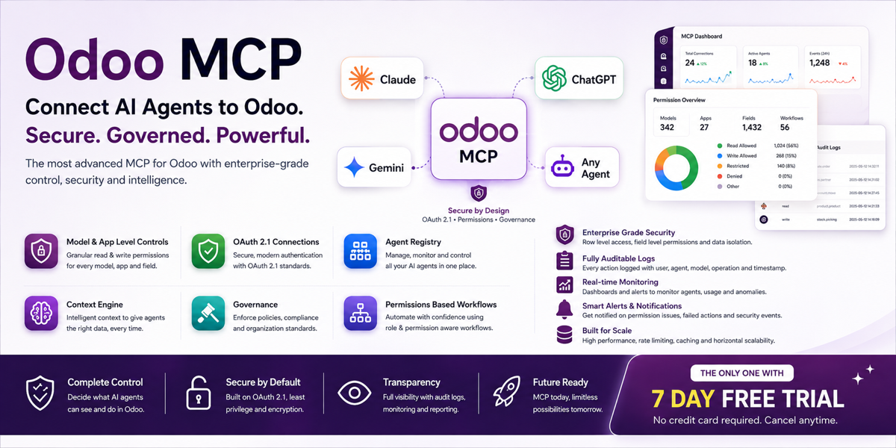

An MCP server that runs inside Odoo. Sign in with your normal Odoo login, paste one URL into Claude, ChatGPT, Gemini or Cursor, and start asking. No extra process, no middleware, no Python dependencies.
Free & open source · LGPL-3 · Read-only by construction
The Connect screen checks every precondition before you leave for your assistant, so you never find out something is wrong by watching Claude fail.
| 1 | Install. A read-only scope is created and opened onto the business models your database actually has — sales, invoicing, inventory, CRM, projects, whichever are installed. |
| 2 | Open Connect. Readiness checks confirm your public HTTPS address, that the server answers from the internet, and that permissions exist. Each one that fails names the fix and opens the screen that applies it. |
| 3 | Copy one URL. Paste it into your assistant and click Allow. VS Code and Cursor get one-click install links; there is a QR code for mobile. |
| 4 | Ask. "What were our sales last month?" — answered, running as you, and logged. |
Not because of a setting somebody has to remember to switch on.
| Read-only, with no switch No create, update, delete or method-call tool exists in this module. There is nothing to misconfigure into writing. | Runs as the real user Every call executes as the signed-in person, so access rights, record rules, field groups and multi-company isolation all apply underneath. The assistant can never see more than they can. | A matrix you control One row per Odoo model, switchable in a list. It can only ever take access away, never add it. |
Searches are capped, because an unbounded query on a 100,000-row model
takes the database with it. But a silent cap is worse than no cap:
the assistant receives a full page, has nothing to tell it the page was
full, and reports partial data as the complete answer. Every reply here
carries has_more, so it says the answer is partial and
narrows the question instead.
A self-contained OAuth 2.1 authorization server, so users sign in with their normal Odoo login and SSO and 2FA just work.
Client ID Metadata Documents (the registration mechanism the MCP spec recommends — the user never sees a client id or secret) · PKCE S256 · RFC 9728 protected-resource metadata · RFC 8414 server metadata · RFC 8707 audience-bound tokens · RFC 9207 issuer identification · RFC 7009 revocation · refresh-token rotation. RFC 7591 dynamic registration is kept as a deprecated fallback.
The transport is dual-era: protocol revision 2026-07-28
and the older handshake revisions 2025-06-18 and
2025-03-26, so connectors built against either generation keep
working.
search_records |
Search with an Odoo domain and read fields back. |
read_group |
Aggregate and group — revenue by month, leads by salesperson. |
count_records |
Count without reading. Cheap on large models. |
name_search |
Turn a customer or product name into an id, reliably. |
get_schema |
A model's fields, so the assistant builds correct filters. |
list_models |
What this connection may reach. |
list_capabilities |
What it can do, and what it cannot. |
Tools are records, not hard-coded Python. Ship an
mcp.capability and some mcp.tool rows, add a
handler by inheriting mcp.engine, and you have extended the
connector — no controller changes, upgrade-safe.
Everything above is free and open source. AI MCP Pro adds the parts a company needs before it lets an assistant change anything:
Odoo 19 · Community · Enterprise · Odoo.sh · LGPL-3